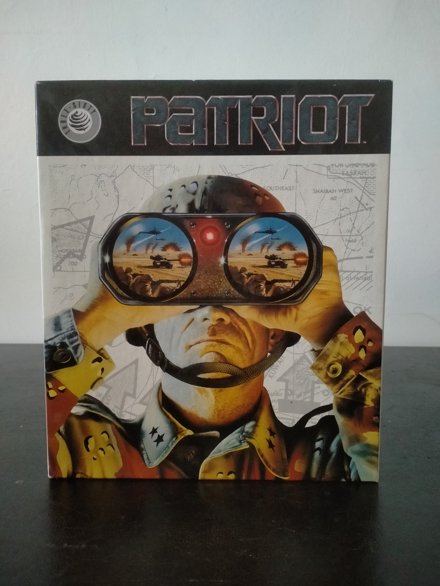

Ficha #000057
Patriot
Patriot es un simulador militar táctico desarrollado por MPS Labs y publicado por MicroProse a comienzos de los años noventa para compatibles PC. El juego sitúa al jugador al mando de un vehículo blindado avanzado en escenarios inspirados en conflictos modernos de Oriente Medio, combinando simulación de combate terrestre, gestión táctica y entrenamiento militar. La edición en disquete para MS-DOS destaca por su presentación típica de MicroProse durante la época dorada de los simuladores militares de PC, incluyendo abundante documentación física y manuales específicos de operaciones y entrenamiento. El título forma parte de la línea de simuladores militares complejos que definieron el catálogo de MicroProse junto a otras referencias históricas del género.
- Formato
- Big Box
- Plataforma
- MsDos
- Género
- Simulación militar Simulador de tanque Combate táctico Vehículos de combate
- Serie
- Todos Big Box
- Desarrollador
- MPS Labs
- Distribuidor
- MicroProse
- EAN
- —
Contenido de la edición
- Caja Big Box
- Disquetes de 3,5 pulgadas
- Manual Patriot Field Operations Manual
- Manual Patriot Training Manual
- Manual de instalación
- Tarjeta de registro
Preservación
- Protección
- Manual lookup
- Formato recomendado
- No aplica
- Jugable en virtualización
- Sí
La preservación puede realizarse mediante volcado de disquetes en imágenes IMG o RAW. La protección parece basarse en consulta de manual durante la ejecución, habitual en simuladores de MicroProse de la época.